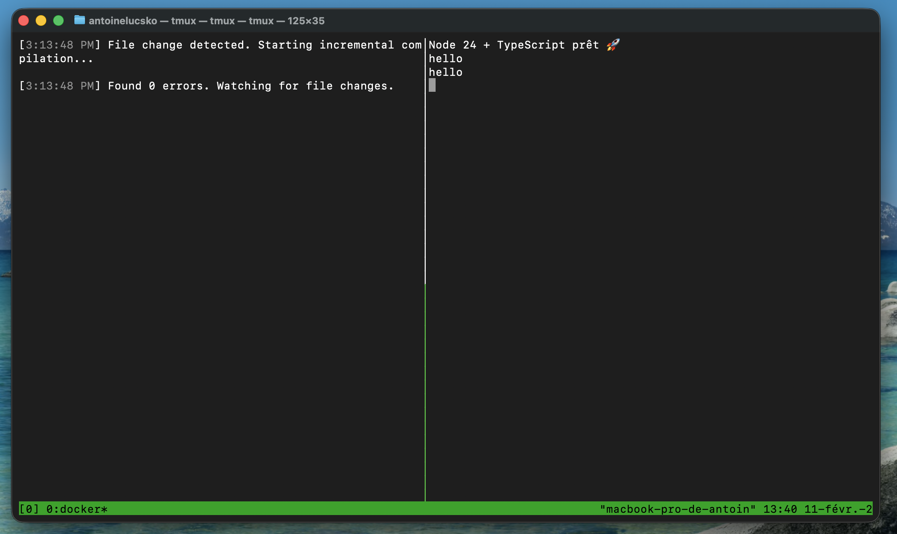

TypeScript — Introduction et bases avancées
TypeScript
Introduction et bases avancées
Pourquoi TypeScript ?
← Retour à l’index
JavaScript est : - flexible - permissif - très puissant
En production…
Cette flexibilité entraîne : - des bugs silencieux - des erreurs
tardives - des comportements inattendus
Setup (repo)
Dans ce repo : - Slides/ : sources Markdown des slides -
docs/ : sorties HTML (générées) - starter/ :
projet Node + TypeScript (exemples / exercices)
Pour générer les slides HTML : -
npm run slides:build
Setup starter/ : runtime vs type-check
Dans starter/package.json :
"dev": "tsx watch src/index.ts",
"typecheck": "tsc --watch --pretty src/index.ts"
dev exécute le code (runtime)typecheck vérifie les types (analyse statique)
Message clé : TypeScript ne protège que si on lance le
type-check.
Double écran / split VS Code (recommandé)
But : éviter “ça tourne donc c’est bon”.
- Split de l’éditeur (ou 2 écrans) pour garder le code visible
- 2 terminaux en parallèle :
- terminal A :
npm run dev
- terminal B :
npm run typecheck
- Dans VS Code : split editor + split terminal (même résultat sur un
seul écran)

JavaScript : ce qui casse en production
Les bugs sont souvent : - silencieux (pas de crash immédiat) -
contextuels (données rares, cas limites) - découverts trop tard
Bug silencieux : donnée API “presque” correcte
const apiResponse = { price: "12.50" };
function formatPrice(price) {
return (price + 1).toFixed(2);
}
formatPrice(apiResponse.price);
Problèmes possibles :
- concaténation au lieu d’addition
- crash au runtime
- difficile à détecter en QA
Le runtime désigne le moment où le programme
s’exécute réellement, ainsi que l’environnement dans lequel il
s’exécute.
Bug silencieux : champ optionnel non géré
function sendEmail(user) {
return user.email.toLowerCase();
}
Le bug apparaît :
- après une migration
- avec un compte incomplet
- sur un cas marginal
Ce que fait TypeScript
TypeScript :
- ajoute des types statiques
- vérifie le code avant l’exécution
- détecte :
- propriétés manquantes
- mauvais types
- incohérences de retour
- améliore fortement la DX
Ce que TypeScript ne fait PAS
TypeScript :
- ne valide pas les données externes
- ne remplace pas les tests
- ne supprime pas les erreurs runtime
Il complète :
- les tests
- la validation runtime
- l’observabilité
TypeScript n’empêche pas d’écrire du
JavaScript.
Il empêche d’écrire du JavaScript faux.
Types = analyse statique
- Les types n’existent pas au runtime
- Le code généré reste du JavaScript
“Ça compile” ≠ “C’est sûr”
const value = JSON.parse('{"price":"12.50"}') as { price: number };
value.price.toFixed(2);
Le compilateur fait confiance. Les données peuvent mentir.
Types primitifs
let count: number = 0;
let name: string = "Alice";
let active: boolean = true;
Attention à null et undefined selon la
configuration.
any : le piège
let data: any;
data.foo.bar();
data.toUpperCase();
- aucune vérification
- désactive TypeScript localement
unknown : alternative sûre
let data: unknown;
if (typeof data === "string") {
data.toUpperCase();
}
- oblige à vérifier
- protège contre les abus
Objets : définir un contrat
type User = {
id: number;
email: string;
};
function sendEmail(user: User) {
user.email.toLowerCase();
}
Propriétés optionnelles
type User = {
id: number;
email?: string;
};
user.email.toLowerCase(); // erreur TS
TypeScript force à gérer l’absence.
Fonctions typées
function add(a: number, b: number): number {
return a + b;
}
Erreur détectée immédiatement :
Fonctions fléchées et inférence
const add = (a: number, b: number) => a + b;
Le type de retour est inféré automatiquement.
Tableaux et génériques
const ids: number[] = [1, 2, 3];
Union types : gérer plusieurs cas
type Status = "loading" | "success" | "error";
function render(status: Status) {}
Impossible de passer une valeur non prévue.
null, undefined et
strictNullChecks
Avec strictNullChecks: true :
let value: string = null; // interdit
Oblige à écrire du code explicite et sûr.
Exemple réaliste : API
type ApiUser = {
id: number;
email: string | null;
};
if (user.email !== null) {
user.email.toLowerCase();
}
Le vrai pouvoir : le refactor
Modifier un type central :
- révèle tous les impacts
- évite les oublis
- sécurise les évolutions
Le compilateur devient un allié.
TypeScript remplace quoi ?
Il remplace :
- la documentation obsolète
- beaucoup de QA manuelle
- certains tests triviaux
Il ne remplace pas :
- la logique métier
- les tests complexes
- la validation runtime
Positionnement mental
TypeScript est :
- un outil de communication
- une documentation vivante
- un garde-fou collectif
Exercices
Exercice 1 — Identifier les bugs
Donnez 3 exemples de bugs silencieux déjà rencontrés :
- TypeScript peut-il aider ?
- Si non, que faut-il ajouter ?
Exercice 2 — Corriger le type
type Product = {
id: number;
price: number;
};
L’API renvoie parfois price: string. Proposez une
solution correcte.
Exercice 3 — Supprimer any
function process(data: any) {
return data.value.toUpperCase();
}
- remplacez
any
- sécurisez l’accès à
value
Exercice 4 — Union type
Créez un type pour l’état d’un formulaire :
- idle
- loading
- success
- error
Implémentez une fonction render.
Exercice 5 — Refactor contrôlé
Ajoutez une propriété role à un type User
:
"admin" | "user"- identifiez les impacts dans le code